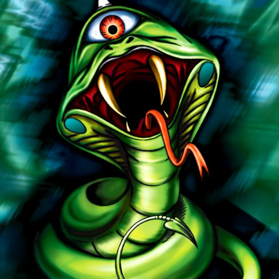

Serpent Marauder

Description: "While this card is face-up in the defense position, cancels any increased movement effects for all cards."
STATS
ATK: 700
DEF: 600DECK COST
Deck Cost per Card: 18EFFECT NOT IMPLEMENTED
Fusion List (2 Possible Fusions)
- Serpent Marauder + Griggle = Snakeyashi
- Serpent Marauder + Man-Eating Plant = Snakeyashi